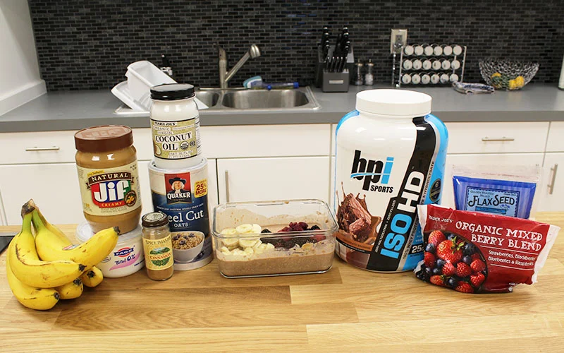

Overnight Oats: The Best Post-Workout Nutrition Solution

Looking for the best possible way to fuel up after an intense session at the gym? Try this quick and delicious Overnight Oats recipe on for size!
Ingredients:
- Oats
- Whey Protein
- Cocoa Powder
- Fruit
- Greek Yogurt
- Coconut Oil
- Peanut or Almond Butter
- Flax or Chia Seeds
- Cinnamon
For more information, visit the original website .